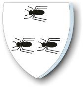

375602 Peder Truedsen Myre
Blev högst 54 år.

Far:
Mor:
Född:
1435 Klinteby, Bornholm, Danmark. [1]
Död:
1489 Klinteby, Bornholm, Danmark. [1]
Barn:
Personhistoria
1435
Födelse 1435 Klinteby, Bornholm, Danmark
[1]
1489
Död 1489 Klinteby, Bornholm, Danmark
[1]
Källor